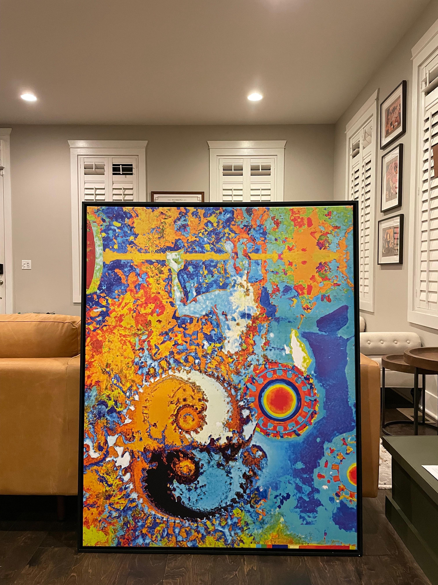

Some ideas hit you from multiple directions before you realize it is all the same.
For several of us who find our way to the Berkshire Hathaway Annual Meeting, the name Peter Kaufman is very familiar. He is also the editor of the book Poor Charlie’s Almanac, which is a stellar compilation of Charlie Munger’s ideas. Peter has had an enormous influence on how I think about the world, and one of the concepts that Peter talks about is in the alchemy of bringing opposites together . In this wonderful article,1 he illustrates how bringing two elements that don’t naturally occur in nature creates an alloy that is enormously stronger compared to each of them.
Copper is soft. Tin is soft. Interestingly, Bronze, which is the amalgamation of copper and tin is 3x stronger than their average. That image of two soft metals forging something hard, keeps constantly popping up in my head. An identical idea is Taleb’s framing of the barbell. In Antifragile, Taleb argues that pairing two extremes — maximum safety on one end, maximum risk-taking on the other — produces something more resilient than any blend in the middle. The barbell isn’t a compromise between opposites. It’s a union of them. And what emerges from that union has properties neither extreme possesses alone.
Growing up in India, this was likely what I was approximately pointed to in philosophical discourse. Dvaita and Advaita philosophies; duality and non-duality . Runs through centuries of Indian philosophy. Prakriti and Purusha. Shiva and Shakti.
Reacing out towards, and bringing back the gift from the opposite, is a worthwhile endeavor.
In the fall of 2022, when Dall-E first came out , I was excited to give some of these abstract ideas life through a painting ; created using Dall-E's very first release and it proudly hangs on one of my living room walls. The article I wrote on Medium and Painting are below.
